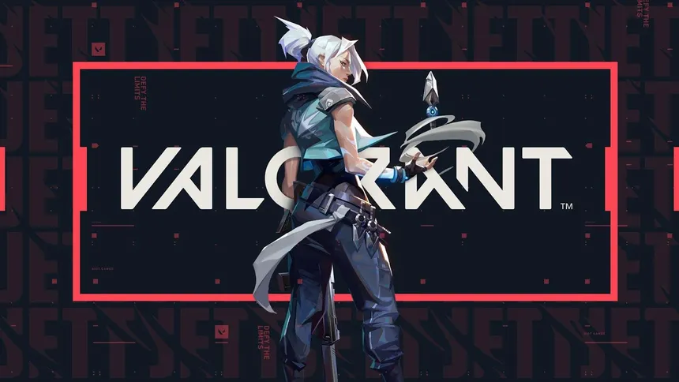
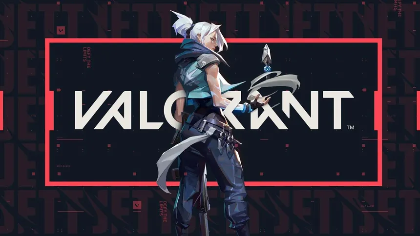
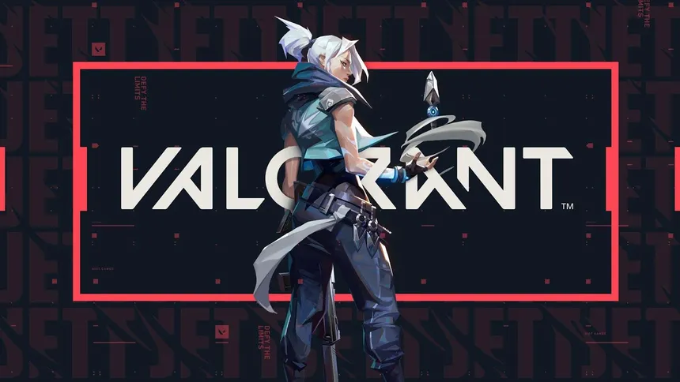

Os jogadores de Valorant têm motivos para se animar com a última atualização do jogo. A Riot Games lançou uma nova atualização que traz consigo uma série de ajustes no balanceamento de agentes, visando aprimorar a experiência de jogo e garantir que todos os personagens sejam igualmente emocionantes e competitivos.

Além das mudanças nos agentes, a atualização também introduz melhorias na jogabilidade, como ajustes na mecânica de movimentação e tiro, proporcionando uma sensação mais fluida e responsiva durante as partidas. Essas mudanças visam a manter o ritmo acelerado e estratégico que tornou Valorant tão popular entre os jogadores.
Os fãs do jogo podem esperar por uma experiência ainda mais equilibrada e envolvente, à medida que exploram as novas táticas e estratégias que surgirão com as mudanças na jogabilidade e nos agentes. Não perca a oportunidade de mergulhar de cabeça na ação tática de Valorant e descobrir como essas atualizações afetarão seu estilo de jogo favorito!"
 
